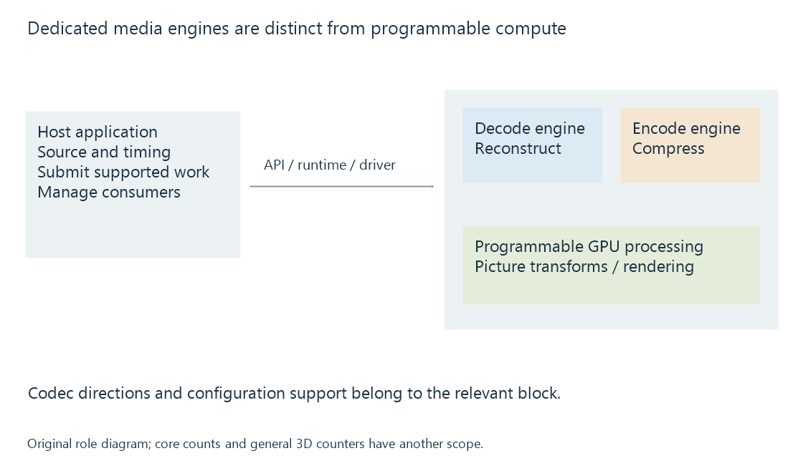

Fixed-function media engines
Fixed-function media engines implement specialized video operations within a device, using dedicated processing paths rather than executing the entire job as general-purpose GPU shader work.
A fixed-function media engine is a specialized processing path designed for particular video tasks. A decoder reconstructs supported compressed pictures; an encoder creates a supported compressed representation.
Such blocks can be part of a discrete GPU or an integrated system-on-chip. They are distinct from the general-purpose compute and graphics resources beside them.
Different blocks answer different questions

| Resource | Work to associate with it |
|---|---|
| Dedicated decoder | Supported compressed-video reconstruction |
| Dedicated encoder | Supported video compression |
| Video processor | Supported picture-processing operations |
| Programmable compute/graphics | Application-defined transformations and rendering |
NVIDIA's NVDEC and NVENC documentation explicitly identifies dedicated decode and encode engines. Intel's Quick Sync and Apple's media-engine specifications likewise distinguish media work from general CPU or GPU-core counts.
A chip can offer one decode capability and a different encode capability. The fact that a compressed format can be decoded does not establish an encoder for that format.
Specialized hardware exposes specific configurations
The engine implements operations within its supported configuration range. Relevant properties can include codec profile, bit depth, chroma format, dimensions and the encoded tools in use.
A newer graphics architecture or higher shader count is therefore not a substitute for its media capabilities. Two products with different graphics performance can have similar dedicated media blocks, while products sharing a marketing family can differ in which blocks are present.
For an Emby conversion, the input decoder and output encoder are selected against different requirements. Their connection is developed in the hardware pipeline.
The engine operates inside a software-controlled job
The application still locates and parses the resource, submits work, manages picture storage and coordinates completion. A dedicated media operation can also use adjacent processing for preparation or optional analysis.
For example, decoded pictures can be processed by a GPU shader before reaching an encoder. A hardware encoder's input might need layout conversion. That adjacent work belongs to the route actually implemented.
Task-manager categories should consequently be interpreted by their engine scope. A video-decode workload can be active while a general 3D category remains quiet. Conversely, a busy compute category can describe filtering rather than compressed-video decoding.
See Also
- GPU compute and video processing
- NVIDIA NVDEC
- NVIDIA NVENC
- Intel Quick Sync Video (QSV)
- AMD Video Core Next (VCN)
- Apple silicon media engines